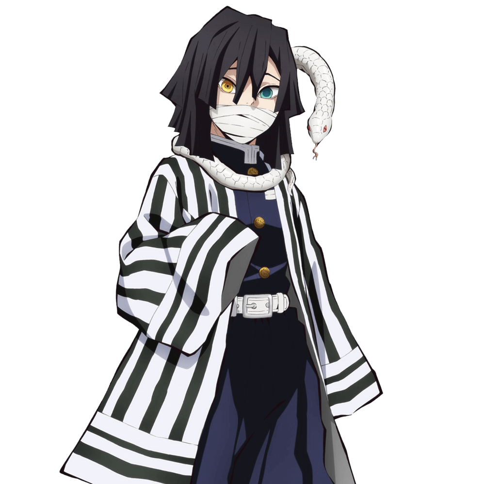

伊黑小芭內（いぐろ おばない Iguro Obanai）
- 配音 : 鈴村健一（日本）；江志倫（台灣）；陳張太康（中國大陸）；Erik Scott Kimerer（美國）；黃龍傑（Viu）、（TVB）（香港）
-
鬼殺隊蛇柱，蛇之呼吸的使用者。用繃帶纏住嘴、擁有異色眼瞳的中長髮男子，而且右眼的視力遜色於左眼。鬼殺隊制服外披著條紋圖案的羽織，日輪刀外型為紫黑色的焰形劍。寵物是一條名為鏑丸的白色雄蛇，平常飼養在身邊。和食量大的甘露寺蜜璃不同，他可以三天不吃不喝都沒問題。
日輪刀是如同蛇一般彎曲的刀，配合蛇之呼吸法，可以令攻擊路徑曲折離奇、從敵人意想不到的位置發動進攻。
在其出生的地方，族人靠搶奪別人的錢財和宅邸為生，罪孽深重且虛偽，而且這個家族生下來的幾乎都是女子，身為族裡唯一的男孩子，小芭內一出生就被關進牢籠。雖然母親姐妹和舅母每天都會來牢籠探望並會替他送上大餐，但說話的聲音甜得發膩，親切到讓人感到惡寒，加上密閉的牢籠讓即使豐盛美味的食物散發一股作嘔的油膩味。在12歲那年，他首次被從牢籠中帶出來，押到一個富麗堂皇的宮殿，在那裡被族人當成神明侍奉的，是一個下半身像蛇一樣的女鬼，小芭內當下立刻明白，這就是每天晚上入睡時都會聽到的那讓他毛骨悚然的聲音來源，族人百年來靠著蛇鬼殺人奪取財物這骯髒事致富。由於蛇鬼非常喜歡吃嬰兒，作為交換，族人會獻上自己生下的嬰兒作為活祭品，而在小芭內出生時因為特殊的異色眼加上370年才會生出他這個男孩，讓蛇鬼相當中意，決定等他成長到12歲時再吃。但此時蛇鬼仍以「太小了還不夠吃」為由暫時不吃掉他。與此同時蛇鬼為了讓小芭內的嘴變得像自己一樣，而命令族人在把小芭內關回牢籠前強行將他的嘴用利刃割出兩道傷痕，並用血盛裝在酒碗中給蛇鬼飲用。在極度痛苦的生活中他遇到了一條迷路的小白蛇「鏑丸」，這條白蛇成為了小芭內唯一信賴的生物。後他以偷來的髮簪鑿開牢籠的一部分努力逃了出來，蛇鬼得知後憤而吃掉了族裡50個人，隨後開始追殺小芭內，就在差點被蛇鬼吃掉時，即時趕到的前任炎柱槙壽郎砍殺了蛇鬼並將他送到表姐身邊，但表姐卻憤怒的認為「因為你逃了所以大家都得死，你要是乖乖被吃掉不就好了」，這句話傷透了小芭內的心。至此之後，小芭內加入鬼殺隊，將這份怨恨發泄在鬼的身上。臉上的繃帶就是為了遮掩被撕裂的嘴角。暗戀著甘露寺，甚至送她一雙綠色條紋長襪當禮物。在得知炭治郎和甘露寺在煉刀師之村擊敗上弦之鬼後感情變得很好時，私自把炭治郎視為情敵。
在柱合會議上討論炭治郎的裁決時，反對主公接納禰豆子加入鬼殺隊。在炭治郎意圖阻止不死川對禰豆子動手時，以手肘將他輕易壓制在地，但隨後被富岡鉗住手。在確定禰豆子不會吃人之後，雖然心有不甘，但也不得不服從主公的命令。吉原篇後奉命前來支援，對宇髄天元一陣冷嘲熱諷，認為不過是最弱的上弦之陸也可以打得如此狼狽，但同時也表示現在柱的人力不足，要對方繼續努力下去別退役。煉刀師之村篇後擔任起劍士們的矯正刀法訓練指導。
最終戰時與其他柱一同受困無限城，與戀柱·甘露寺蜜璃與新上弦之肆·鳴女交戰。與甘露寺被鳴女絆住手腳，因為兩個柱被一個上弦拖延而感到不甘，隨後愈史郎設計遮蔽鳴女的視線後，與甘露寺趕往戰場，並救了受傷的炭治郎。隨即與無慘交戰，但卻無法對無慘造成致命傷。因爲鳴女被殺，無限城崩壞，再次與無慘交戰，在斬中無慘脖頸時發現無慘擁有瞬間恢復傷口的能力，之後被無慘打傷，後來岩柱和風柱趕到戰場，與無慘的戰鬥一觸即發。後來甘露寺被無慘打傷臉和左肩，小芭內把受傷的甘露寺交給身後的隊員並叫他們去找愈史郎，然後回頭奔向無慘，此時臉上的繃帶已掉落。因為自已的身體比較小最先被毒素蔓延全身，但後來被珠世的貓所發射的注射劑所救。之後回想起鎹鴉射報告得知無一郎意外覺醒了「赫刀」，推測只有面對生命危險才能爆發力量，隨即覺醒了斑紋和開啓了「赫刀」，由於太過專注於開啟赫刀，反而造成了缺氧險些昏迷，後在伊之助等人趕到後重整自身狀態。在和無慘對戰時，只是盯了無慘幾秒，便領悟到「通透世界」，和悲鳴嶼一樣，看到了無慘的內部，隨即被無慘的廣範圍攻擊掃中，撞進牆內。後來在炭治郎對陣無慘時出手相助，雙眼被無慘的攻擊掃中而失明，也透露出平常是依靠鏑丸感知外界。在炭治郎的幫助下利用愈史郎的符咒從而獲得鏑丸的視覺並對炭治郎表示感謝。於無慘灰飛湮滅之後因傷勢過重，在與甘露寺互訴情意下迎接死亡到來。
小芭內過世後，其飼養的鏑丸被交給香奈乎代為照顧。漫畫最終話和單行本最終卷附錄說明蜜璃和伊黑的轉世在現代相遇結婚，兩者開設快餐店，育有5名子女。
其人物原型取自作者的短篇《文殊史郎兄弟》主角之一的文殊史郎聖正（哥哥）。
在鬼滅學園擔任化學老師。為了避開女性而隨時帶著口罩和一條蛇，但是經常去小葵家的定食屋喝茶，也常打電話確認綁著麻花辮的女孩是否在場。
在第一回人氣投票結果中，以90票獲得第26名。在第二回人氣投票結果中，以6204票獲得第8名。